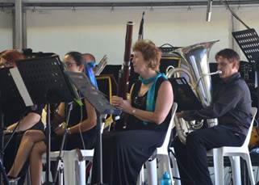

Review - World Music Concert
The World Music Concert was a breath of fresh air to Townsville music lovers who had just about reached classical music saturation following AFCM.
Andrew Ryder poured his expertise and enthusiasm into this opportunity provided through Townsville City Council sponsorship. Andrew developed the concept for the concert; sourced the music which involved him personally arranging some of the music; liaising with the professional performers; and rehearsing and conducting the Barrier Reef Orchestra.
The performance delighted more than one sense through the visual backdrop showing scenery pertinent to the music and the amazing musical sound evoking toe tapping, clapping, singing and sheer enjoyment.
The world tour began with David Hudson on didgeridoo, guitar and vocals synchronizing with the visual backdrop to grab the audiences' attention, performing the popular John Williamson ballad Raining on the Rock. The tour continued through Korea and Cuba courtesy of a quality Barrier Reef Orchestral performance. Next, virtuosic Domenico Taraborrelli on piano accordion and vocalist Adam Lopez, supported by the Orchestra, engaged the audience with Latin American pieces. Unfortunately the balance was a little off, with the soloists being much louder.
The second half began with the Barrier Reef Orchestra creating an American theme through Aaron Copland before heading off to Europe with the Orchestra supporting Domenico once again in Italy, John Ferguson on bagpipes with vocalist Cynthia Clark in Scotland and Adam Lopez in Spain.
The tour aptly returned to Australia with all the soloists returning to the stage to present a rousing and emotive performance of I am Australian.
This very enjoyable performance once again demonstrated the talented people choosing to live in Townsville and able to produce such a high class production, equal to anywhere. This was reinforced by the willingness of quality professional musicians to come to Townsville and perform with the Barrier Reef Orchestra. I feel certain if more was known about the concert the Civic Theatre would easily have been at capacity.